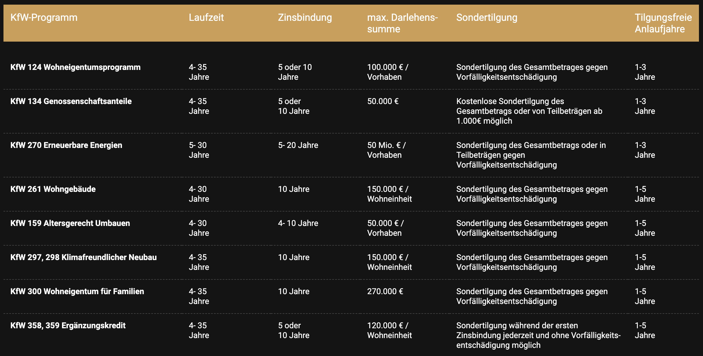

0231 99333317
Mo bis Fr 9-18h
Mo bis Fr 9-18h
Ein KfW-Darlehen bietet oft günstige Zinsen, tilgungsfreie Anlaufjahre und Zuschüsse, die nicht zurückgezahlt werden müssen.
KfW-Darlehen müssen über eine Bank oder einen Finanzierungsvermittler beantragt werden und dienen als Ergänzung zur Baufinanzierung.
Es gibt verschiedene KfW-Darlehen, die für unterschiedliche Maßnahmen wie den Einsatz erneuerbarer Energien oder altersgerechtes Umbauen konzipiert sind.
KfW-Darlehen sind zinsgünstige Kredite, die von der Kreditanstalt fürWiederaufbau (KfW) angeboten werden.
KfW-Darlehen sind zinsgünstige Kredite, zum Teil mit Tilgungszuschuss, die von der Kreditanstalt für Wiederaufbau (KfW) angeboten werden. In der Regel werden mit der KfW aber keine kompletten Immobilienfinanzierungen getätigt. KfW-Darlehen dienen normalerweise als Ergänzungsbausteine zur hauptsächlichen Baufinanzierung. Größter Pluspunkt der KfW-Darlehen: Die Zinsen der KfW sind in vielen Fällen niedriger als die einer normalen Baufinanzierung. KfW-Darlehen bringen aber noch weitere Vorteile mit sich, wie tilgungsfreie Anlaufjahre, die den Kreditnehmer in der ersten Phase der Finanzierung entlasten.
Die Zinsen von KfW-Darlehen sind in der Regel niedriger als die aktuellen Bauzinsen. In Zeiten niedriger Zinsen, können die Zinsen gängiger Annuitätendarlehen durchaus mit den KfW-Zinsen mithalten. Allerdings lässt sich sagen: In der Regel reichen die Zinsen normaler Baufinanzierungen nur an das günstige Niveau der KfW heran, wenn du ideale Voraussetzungen mitbringst: Beispielsweise genügend Eigenkapital, um den Beleihungsauslauf unter der 60-%-Marke zu halten.
Die nachfolgende Tabelle zeigt ausgewählte KfW-Darlehen, die vor allem für dich als Privatperson infrage kommen, in einer Übersicht. Die verschiedenen Konditionen haben wir ebenfalls zusammengetragen.
Die KfW-Darlehen müssen im Normalfall über das Grundbuch mit abgesichert werden, wie die Hauptfinanzierung auch. Als Gläubigerin wird aber in diesem Fall nicht die KfW eingetragen, sondern die durchleitende Bank. Denn sie haftet gegenüber der Kreditanstalt für Wiederaufbau für deine Zahlungsfähigkeit.
Das Hauptdarlehen erhält in der Rangfolge den 1. Platz, weil es normalerweise die höhere Restschuld aufweist. Das KfW-Darlehen wird also nachrangig besichert. Am Ende stehen 2 Darlehen im Grundbuch:
1. Das Hauptdarlehen, meist ein Annuitätendarlehen, Gläubigerin: die durchleitende Bank.
2. Das KfW-Darlehen, meist ebenfalls ein Annuitätendarlehen, Gläubigerin: ebenfalls die durchleitende Bank.
Beachte dabei aber: Oftmals müssen nur KfW-Kredite mit einer Summe ab 30.000 €aufwärts ins Grundbuch eingetragen werden.
Deinen KfW-Kredit kannst Du jederzeit kündigen. Die Kündigung ist allerdings an Bedingungen geknüpft, abhängig davon, wie lang dein KfW-Darlehen bereits läuft.
- Die Zinsbindung deines KfW-Darlehens hält noch an:
Kündigst du das KfW-Darlehen während der Zinsbindung, stellt die KfW dir eine Vorfälligkeitsentschädigung in Rechnung. Die Höhe der Vorfälligkeitsentschädigung bestimmt deine Hausbank, über die du den KfW-Kredit damals beantragt hast. Du zahlst dann die ausstehende Restschuld sowie die Vorfälligkeitsentschädigung bei der KfW. Ausnahme: Deine Zinsbindung dauert bereits mehr als10 Jahre. Dann zahlst du bei einer Kündigung durch das Sonderkündigungsrecht gemäß §489BGB keine Vorfälligkeitsentschädigung mehr.
- Deine Zinsbindung ist ausgelaufen:
Ist deine Zinsbindung ausgelaufen, ist eine Kündigung solange möglich, wie du noch keinen neuen Vertrag für die Finanzierung abgeschlossen hast. In dieser Phase sind auch Teilrückzahlungen möglich, ohne dass eine Vorfälligkeitsentschädigung gezahlt werden muss.
In Zeiten niedriger Zinsen lohnt es sich auch bei KfW-Darlehen auf eine lange Zinsbindung zu setzen, um nicht dem Zinsänderungsrisiko ausgesetzt zu sein. Sollten die Zinsen wider Erwarten während der Laufzeit weiter gesunken sein, greift das Sonderkündigungsrecht nach 10 Jahren. Bei KfW-Darlehen, die nicht länger als 10 Jahre bestehen, lohnt sich eine Kostenprüfung. Ist die Vorfälligkeitsentschädigung niedriger als die Zinsersparnis des neuen Darlehens, ist auch in diesem Fall ein Zinswechsel sinnvoll.
Die KfW bietet Sondertilgungen bei ihren KfW-Darlehen nur sehr eingeschränkt an und verlangt für Sondertilgungen normalerweise eine Vorfälligkeitsentschädigung. Die genaue Höhe der Vorfälligkeitsentschädigung teilt dir die durchleitende Bank mit, über die du den KfW-Krediteinst beantragt hast. Über diese Bank wickelst du übrigens auch die Sondertilgung ab.
Der KfW-Kredit lässt sich auch in Teilsummen abrufen. Bei der Finanzierung eines Neubaus bezahlst du den Baufortschritt Stück für Stück, und zwar immer dann, wenn wieder ein Bauabschnitt fertig gestellt wurde. Diese Bezahlintervalle legst du in der Regel gemeinsam mit dem Bauträger vertraglich fest. Ist eine Bauphase fertiggestellt, wird das Geld dafür bei der KfW abgerufen. Dabei ist aber wichtig zu wissen, dass KfW-Darlehen wie beispielsweise das Wohneigentumsprogramm (KfW 124) innerhalb von 12 Monaten komplett abgerufen werden müssen.